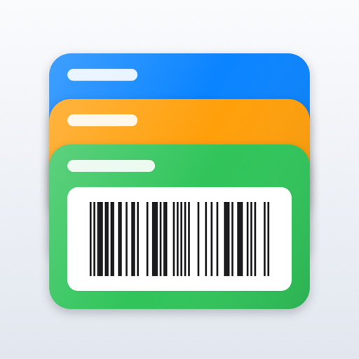
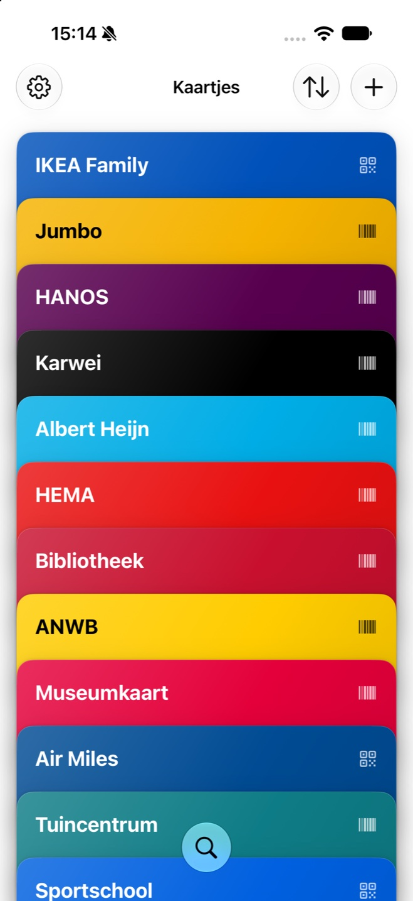
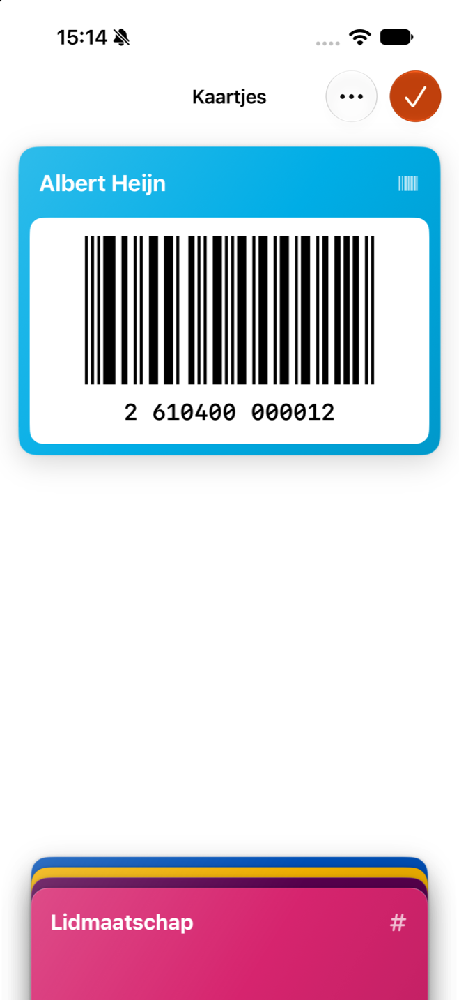
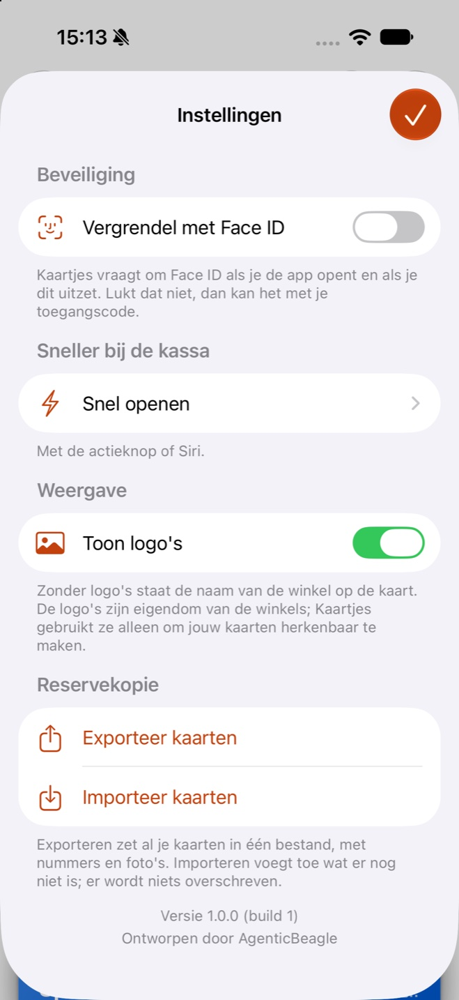

Al je klantenkaarten op je iPhone. Scan één keer, en bij de kassa staat de barcode groot op het scherm.
Binnenkort in de App StoreGratis, voor iPhone met iOS 27


Richt de camera op je kaart. Kaartjes leest de barcode, herkent de winkel en geeft de kaart zijn eigen kleur. Niets overtypen. Lukt scannen niet, dan kies je een foto of typ je het nummer.
Eén tik opent je kaart groot en scherp, met het scherm op volle helderheid. Een lange code krijgt het hele scherm.
Geen account, geen reclame, geen tracking. Je kaarten staan op je iPhone en, als je dat wilt, in je eigen iCloud. Vergrendel ze met Face ID.
Geef een kaart door aan wie hem ook gebruikt, als Kaartjes-bestand of als afbeelding. Eén kaart, aan één persoon, en klaar.
Zet al je kaarten in één bestand, in Bestanden of iCloud Drive. En zet ze zo weer terug.
Zeg "Open mijn kaart in Kaartjes", of zet Kaartjes op de actieknop. Alleen als jij dat instelt.
Vragen? Kijk bij ondersteuning, of lees hoe Kaartjes met je gegevens omgaat in het privacybeleid.